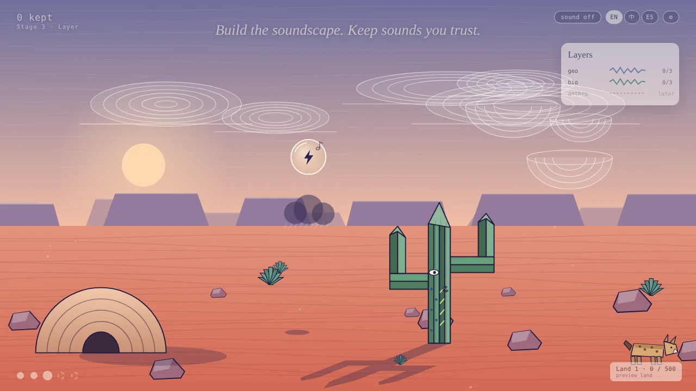

The proposal planned three stages. The build grew to five, each one a different way of listening. Every sound you keep grows the saguaro, and every mirage you keep leaves a mark on it.
1 · Listen
Geophony Wind and rain. Keep what the land confirms.
2 · Shimmer
Biophony Who is singing? Look for the singer.
3 · Layer
Build the soundscape. Keep sounds you trust.
4 · Hum
Anthrophony Engines and voices. Is anyone really there?
5 · Echo
Nothing gives them away. Keep what you believe.
In the build
Sound cards, and a sound postcard.
Stage 1: hover to listen, click to keep.
Sound cards that teach
The first time you keep a sound from each family, a card explains geophony, biophony or anthrophony. Keeping a mirage shows a card too, so the lesson arrives at the moment you need it.
Layers you can mute
From Stage 3 a Layers panel shows each family as a waveform. You can mute one to hear what the others are doing.
A postcard of what you heard
At the end you plant the saguaro and download a sound postcard that records your run.

Stage 3: the saguaro has grown arms and the Layers panel appears.
What it left open
Honest about the stand-ins.
All the sounds in this build were synthesised stand-ins, and the desert was drawn in simple flat shapes. Week 3 replaced them with recordings and painted scenes.